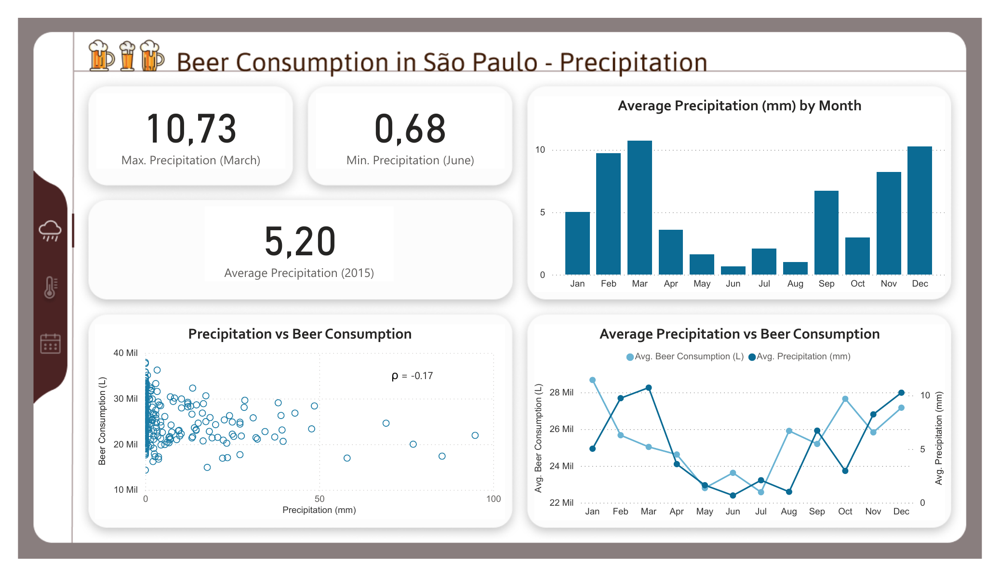
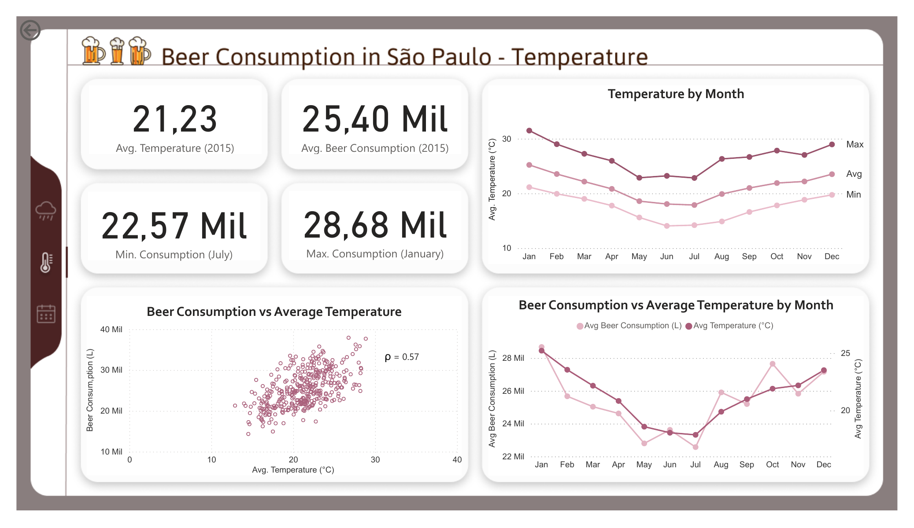
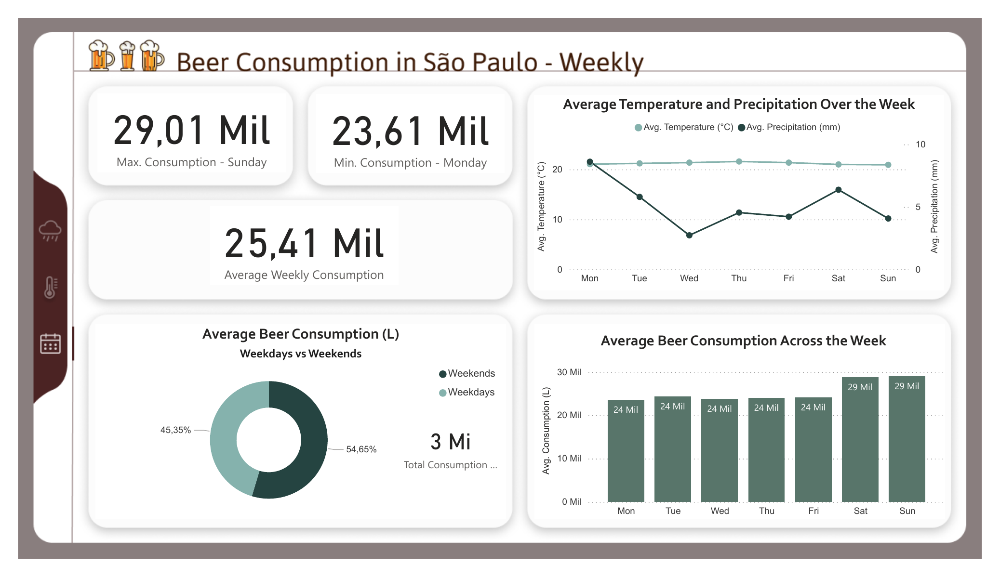

O setor cervejeiro representa uma parcela importante do PIB (1,6% em 2018)[1], com destaque para São Paulo, onde se observa um aumento do número de cervejarias [2]
Nesse contexto, o estudo de fatores que influenciam o consumo e o mercado ajuda a entender melhor o comportamento e as preferências do consumidor, o que permite desenvolver estratégias de marketing e vendas mais eficazes.
Sendo assim, este projeto teve como objetivo explorar alguns dos possíveis fatores que influenciam o consumo de cerveja na cidade de São Paulo, a partir da criação de um dashboard de Power BI.
Estes dashboards foram criados com base neste dataset disponibilizado no Kaggle, contendo dados coletados numa região universitária ao longo de 1 ano em 2015, a partir de estudantes entre 18 e 28 anos de idade. Além do consumo de cerveja, o dataset contém também dados referentes à temperatura e precipitação.
Análises complementares podem ser encontradas aqui, um notebook onde utilizei bibliotecas do Python como Pandas, Matplotlib e Seaborn para explorar estatísticas descritivas, avaliar as distribuições das variáveis, e realizar algumas análises preliminares dos dados.
Visto que este projeto tinha apenas como objetivo meu aprendizado particular (com foco na construção de um dashboard de fácil visualização usando o Power BI), as análises apresentadas aqui não serão muito complexas.
No entanto, no futuro pretendo desenvolver dashboards mais completos envolvendo análises mais profundas e direcionadas.

O primeiro dashboard organiza os dados referentes à precipitação na cidade de São Paulo e, na parte inferior, compara esta variável ao consumo de cerveja.
Ao se observar o gráfico de linhas (comparação da precipitação média com o consumo de cerveja ao longo do ano), as duas variáveis apresentam padrões semelhantes, onde o aumento do consumo está associado à maior precipitação, e vice-versa.
No entanto, o scatter plot mostra pontos que não apresentam um padrão muito definido, e o cálculo do coeficiente de Spearman indica apenas uma correlação negativa fraca.
Sendo assim, os resultados sugerem que não há uma relação entre as duas variáveis.

O segundo dashboard foi criado com base nos dados de temperatura. Para avaliar sua relação com o consumo de cerveja, foram utilizados apenas os dados referentes à temperatura média.
Mais uma vez, o gráfico de linhas no canto inferior direito sugere uma possível associação entre as duas variáveis, que apresentam um padrão similar de aumento e queda ao longo do ano.
Dessa vez, o scatter plot apresenta um padrão mais definido, onde o aumento da temperatura está moderadamente associado ao aumento do consumo de cerveja.

Por fim, o último dashboard mostra que o consumo de cerveja é maior no sábado e domingo.
Embora o dashboard anterior sugira uma associação entre temperatura e consumo, estes gráficos sugerem que - mesmo sem variações na temperatura - o consumo de cerveja tende a ser maior durante os finais de semana.
Limitações
Visto que este projeto não envolveu a realização de análises estatísticas aprofundadas, e seu objetivo era apenas explorar os dados de forma visual, não é possível tirar conclusões robustas a partir dos resultados apresentados - eles poderiam servir apenas como guias para explorar novas possibilidades.
É importante lembrar também que, segundo a fonte do dataset, a coleta de dados foi realizada numa área universitária e com uma amostra de estudantes, e por isso não é possível extrapolar quaisquer conclusões para a cidade de São Paulo como um todo.
O tamanho da amostra e o método de coleta de dados também não são conhecidos, sendo impossível discutir a padronização e confiabilidade dos resultados.
Considerações Finais
Apesar das limitações, os gráficos apresentados ainda permitem identificar possíveis fatores que influenciam o consumo de cerveja, como temperatura e dia da semana.
Sendo assim, poderia ser interessante realizar análises mais profundas sobre como esta relação se estabelece neste contexto.
Por exemplo, seria interessante avaliar o efeito da temperatura controlado pelas comemorações que ocorrem no início e final do ano, períodos de festas em que naturalmente é esperado um maior consumo de álcool.[3]